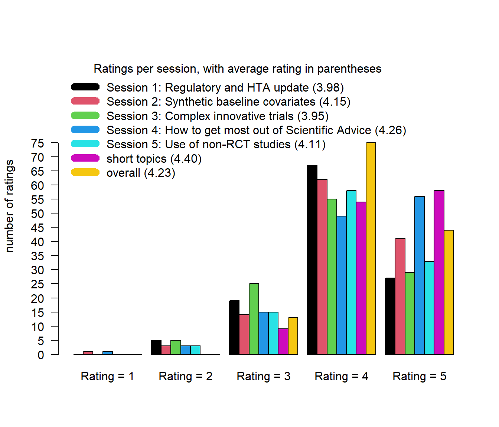

EFSPI regulatory statistics workshop 2023: feedback from participants and contributors
Data status
Data as of 2024-08-08 at 13:34:42.
Feedback from participants
In total, 132 participants have completed the feedback form until the above cutoff date.
Rating per session
Feedback from virtual participants
What was the primary reason you did not attend on site?
| Clinical (N=7) | Other (N=1) | Regulatory (N=6) | Statistics (N=40) | |
|---|---|---|---|---|
| reason | ||||
| Basel too far away. | 1 (14.3%) | 1 (100.0%) | 0 (0.0%) | 2 (5.0%) |
| Do not want to invest two full days. | 0 (0.0%) | 0 (0.0%) | 2 (33.3%) | 2 (5.0%) |
| Not all sessions of interest. | 0 (0.0%) | 0 (0.0%) | 0 (0.0%) | 2 (5.0%) |
| Not enough time to travel to Basel. | 0 (0.0%) | 0 (0.0%) | 1 (16.7%) | 14 (35.0%) |
| Other. | 2 (28.6%) | 0 (0.0%) | 1 (16.7%) | 7 (17.5%) |
| Travel to Basel too expensive / not approved by company. | 4 (57.1%) | 0 (0.0%) | 2 (33.3%) | 13 (32.5%) |
What would have made you attend on site?
| What would have made you attend on site? |
|---|
| Company willingness to sponsor |
| nothing, prefer virtual meetings |
| not in Basel for private reasons |
| I had already attended a conference in 2023 |
| If I base in Basel or allowed to travel to Basel |
| I would in any case have attended virtually. |
| Less workload |
| Find time to travel |
| Company budget restrictions |
| - |
| More comfortable chairs :) |
| Nothing, I am based in Italy |
| N/A |
| Online is great as it allows participation without environmental impact - no need to fly. |
| I wish I could attend on site, but this year I have very crowded agenda, so I couldn’t afford “wasting” time on travelling. I hope I’ll see you next year in Basel :-) |
| That I would have had the time to travel, and that my company would have been able to pay for the fee and travel/hotel costs |
| living in Basel |
| I currently prefer to attend virtually, as only a rather small amount of sessions is of interest for me. |
| in person was no longer an option by the time I registered |
| Make it happen in India next time we can make it to the event on site. |
| Location only - I am living far away;-) |
| Had I only been allowed by my superior to travel there, I would have. |
| Nothing (due to current restrictions on travel) |
| Less meetings at the office |
| I would have not been able to come due to time constraints at my end |
| I have significant mobility and health issues, and attending on site would be physically exhausting and I would need to bring a personal assistant in order to consider doing so. I really appreciate that I can attend virtually. |
| No budget restrictions from my organization |
| Budget by organisation :) |
| Maybe more interactive |
| nothing |
| I attended virtually the workshop just only because I was not able take some days off from the office but definitely I would preferred to join on site. |
| Travel approval |
| Different date |
| Easier and cheaper travel |
| travel budget |
| No train available on specific dates. Additional day off needed |
| More time in a busy daily work |
| Better Planning on my side |
| Budget |
| have the event in EH, US :) |
| my time |
| No travel restrictions from my company and no logistical constraints regarding family situation |
| - |
| If I was less busy in September… |
| Organisation of the conference on other dates |
What did you most like about the workshop?
| What did you most like about the workshop? |
|---|
| enthusiasm, great mix, good dialogue & discussions |
| Honest dialogue and feedback between industry participants and regulators |
| Q and A with the regulators (Session 2) |
| it is highly relevant for people who work in the pharmaceutical industry |
| Open dialogue with regulators and HTAB reps |
| The Q&A |
| insights into novel designs and HA mindset |
| Really great scientific content, friendly atmosphere during the sessions and during the wine tasting and fabulous networking. 😉 |
| the short topics session and that it was on Wednesday morning when everyone had a fresh mind |
| variety of topics |
| Lively and open discussions during and between the sessions. |
| Really well organized on site |
| Knowledgeable speakers and relevant examples |
| Liked the presence of HA & HTA and the varied viewpoints |
| The venue was great. All topics were relevant and reflects current state of knowledge. |
| Presentations are with high quality, content very relevant and informative |
| Everything worked well for an attendee at distance. |
| The much time allocated to discussion |
| friendly atmosphere, scientific exchange |
| addressed topics relevant for daily work |
| Good/interesting topics and long break for networking |
| I really enjoyed the session on scientific advice and single arm trials, as I felt they were very relevant to me and gave very practical advice to share with my colleagues. |
| Well-prepared presentations, motivated speakers |
| panel discussions where realistic and practical oriented |
| I appreciated the sparse programme allowing for many great discussions. |
| The location and the short topics session |
| Q&A discussions with HA representatives |
| Lively discussions |
| The “short topic” session with short and crisp presentation and direct answers from authority. |
| Hear from regulators and HTAs |
| Real worls experience. Highly experienced presenters |
| the topics covered, the literature and guideline references given |
| Excellent presentations + time and opportunity for free interaction |
| Lots of time for networking! Posters were placed centrally so people who are interested in the same thing stumble across each other. Glad that HTA issues were discussed as well. |
| To be able to connect with colleagues from industry and HA. I really liked the short question session (not all of the questions, but the format was great). Also that there was nothing to miss because no parallel sessions |
| virtual setting |
| The diversity of speakers was great! |
| Regulatory |
| Interactive format with lots of discussants from regulatory |
| Transparency and the will to be open and show another side |
| Many regulators were attending the meeting, and were open to be asked about their experience and expectations which was extremely good. |
| Interaction with, and approachability of, reguatory statisticians. |
| Everything was great :-) |
| Contact to others. Great to have sponsor and regulatory participation. |
| getting HA perspectives |
| Real time interactions between Industry and Regulators |
| Open atmosphere, safe space for scientific discussion, diverse viewpoints |
| location; short topics; staying connected |
| The broad scope of the different presentations, a good update on recent developments |
| inclusion of regulatory people |
| The open athmosphere, great exchange and many interesting contributions |
| Presence of man regulators in person, room for discussion, section on covariates, practical examples |
| Listening to the regulators’ perspectives |
| Openness from HT/HTA representatives for sharing their thoughts |
| Diversity of representatives from regulators, and their willingness to express their opinions. |
| Having the regulators there |
| Shared experience, and discussion |
| I think the short topic session was exceptionally good. I specifically liked the interactive nature of it and the fact that it was placed on the first day of the meeting. |
| As always, great workshop. |
| good information/presentations |
| It was very interactive |
| Easy access to relevant information. |
| The organisation was excellent, the venue was excellent, David Wright’s talk was the highlight for me. |
| Open discussions and thoughtfulness of participants |
| It was informative and educative |
| Chance to meet people |
| Enthusiasm of presenters and attendees |
| the case study from pharma industry such as Novartis |
| That there were several sessions each day so that more topics could be covered. |
| Opportunity to meet colleagues and new people, discussions |
| Great choice of topics and very interactive discussions. |
| Discussion of most relevant topics for pharma industry and regulators |
| Getting an overview on current discussions in the community. |
| Short Topic Sessions |
| High-quality collaborative cross-functional exchange on really important topics |
| Quality of the speakers and shared passion/interest from regulators and sponsors |
| Having regulators weigh in on complex issues |
| Format of short topics session. Venue is good for such a workshop. |
| System overview and update |
| Short Topics Session & Discussions |
| Regulatory updates and presentations of reflection papers, but presentations like how to get the most out of scientific advice and What’s the rule for the pool |
| informal atmosphere, open discussion, diversity of attendees and speakers (e.g. HTAs are not often included in other regulatory conferences) |
| great logistics; great presenters; HTA being in scope of the workshop, ease of registration and attendance; option for virtual attendance |
| The openness in discussions in all sessions. |
| Topics around scientific advice were very interesting and engaging |
| Good discussion but quite low regulatory/health authority represnetation- the same people were speaking up and I’m not sure a realistic regulator viewpoint was presented |
| The panel discussions, the case studies presented, the topics on HTA and the talks on advice for young statisticians. |
| The possibility for direct QA and informal interactions between regulators and companies. Very open and constructive athmosphere. |
| the open discussions about the rigour and quality |
| HTA |
| Coming together of regulators and industry |
| all the speakers shared a good content |
| The atmosphere |
| A lot of room for discussion, short topics session, long coffee/lunch breaks |
| Clarity of the session |
| All the topics were The workshop was very informative and helpful for my daily activities and very well organized. |
| Presence of regulatory and industry perspective |
| Coming from pharma background and not stat background, I liked when it was mixed roles involved and hearing from everybody’s perspective. That will help us to gain more insights in pharma industry with wider clinical team representation. The topics were also focused. |
| A great mixture of regulators and sponsers |
| The option to join virtually, the good balance between presentations from representatives from Reg Agencies and Industry |
| F2F open discussion over long lunch breaks |
| Format, practical topics |
| Extended time for discussion and question and answer |
| The interactions between industry and regulators in a reasonably informal setting with clear respect from both parties on each other opinions. It was also a good move to have the “short topics” moved to the first day to basically right away put that desire for those kind of interactions upfront. It was a great way to get to that special atmosphere. |
| The choice of topics |
| diverse and relevant selection of topics |
| Discussions and exchange of the ideas |
| cases discussion with regulatory people |
| The open discussion between industry and Health Authority attendees |
| Participation, good invollvment of attendance |
| Very relevant topics without technical details |
| Practical advice, concrete tipps how to handle certain situations |
| Scientific and regulatory content |
| Ability to directly ask questions to regulators |
| The interaction/dialogue. Focus on application and how to communicate and deal with regulators. |
| The close interaction between company statisticians and regulators |
| good presentation and discussion |
| The open atmosphere between attendees |
| Content |
| open and transparent discussions between regulator and colleagues from the industry |
| Good pace, sufficient time both for scientific discussions (during sessions) and networking (outside of sessions) |
| very informative |
| session on short topics |
| Mix of topics |
| I like the fact that all topics are relevant for people who work on drug development. Some like me with little stat knowledge could enjoy this workshop every much. |
| was great!!! |
| the short topic session |
| Kit was excellent hope to see him back. In general, it was a fruitful alignment of regulators and sponsors |
| Great presentations. Discussions with regulators, Q&A |
| Possibility to participate remotely |
| The dynamic aspect and encounters over bounderies sponsors regulators. |
| Critical, controversial discussions on innovative statistical methods |
What did you most dislike about the workshop?
| What did you most dislike about the workshop? |
|---|
| - |
| Nothing, surprisingly captivating from virtual attendance |
| Some topics too special, e.g. synthetic covariates. |
| very crowded |
| Update type talks were not as engaging as the remaining sessions |
| Most people are seniors, not many from academia, I would like to talk to new people but there was no chance |
| for non-statistician, some times difficult to follow |
| NA |
| the lobby in the biozentrum was very warm |
| talk 2 on platform trials in the innovative designs sessions was the worst ever on my memory of EFSPI events. I would also welcome more time for discussions/debates |
| Travelling in the morning of the first day was not an option. Furthermore, the possibility for a joint dinner on day 1. |
| I payed more than 50 EUR in bank transfer ☹️. Would be much easier with 💳 |
| Nothing |
| Sometimes the talks were quite high level or procedural |
| NA |
| Some sessions are at late night time for me |
| Unfortunately the information of the program reached me at a time whne other meetings had been agreed, so I could not attend the entire program. |
| Those sits were very uncomfortable |
| nothing relevant |
| nothing |
| / |
| I think the lunch break on the first day could have been shortened as they were only a handful of posters and the authors were not stood next to them to discuss. |
| NA |
| participation of online attendees was challenging some timess |
| - |
| The lunch time was a bit too long. |
| speakers presenting virtually |
| - |
| That it was not allowed to take something to drink/a glass with me during the session. Better to have PET bottles. Or what about a “refill station” where you can fill your bottle with water again, to avoid too much plastic. |
| all good, at the beginning of some sessions the mic was mutes but that was quickly solved |
| Sound quality |
| Nothing |
| Nothing negative to comment really |
| Not all topics were of equal interest to me. |
| Warm food for lunch would have been a nice option |
| some presentations could have been shorter |
| No comment - all very good! |
| Wine Testing |
| Occasionally sound issues for virtual attendees |
| Virtual presentations. Sometimes could not hear well because of the microphones |
| Some lectures appeared a bit unfocused and thus not useful. |
| Location - I am not a great fan of Basel. |
| No complaints! |
| nothing |
| talks about updated guidance |
| Lunch options could be more varied |
| Insufficient drinks on first day |
| none |
| Nothing. Only minor thing was that several times the questions from the auditorium was not heard online, and the speaker did not repeat before answering |
| the chaires!!! |
| Consider to only have panel discussions at the end rather to allow questions in between. That wasn’t really helpful. Try to avoid as much as possible to have virtual speakers as on-site attendence improves the interaction. |
| Some of the online presenters from US were not easy to understand |
| nothing |
| No bottle water the first day. |
| Nothing. |
| Seats too hard for 2 hours sitting |
| I missed the main message from some of the presentations |
| The sandwiches served at lunch were pretty dry. Apart from that the meeting could have been longer than only 2 days :-) |
| Would be great to have more clinical representation both from the regulatory side and industry side. Was the gender imbalance on the panel in the short topic session representative of the proportion at the HAs? How often does Novartis want to present the NEOS study at the EFSPI workshop? If the response is “it depends” to half the questions, maybe the presenters should be encouraged to be more precise in their questions. I would love to see more case studies from the regulatory side, in particular what motivates their questions/feedback. |
| early start time for U.S. participants |
| There was nothing to dislike |
| Not really applicable as I only followed a very small amount of sessions. |
| Nothing I can think of. |
| the dares (had Day 2 conflict )- unfortunate |
| technical glitches |
| long winded talks |
| I did not realize that the course would be like that, so my problem: I thought it would be more about statistics since I am a clinician without huge statistical background. |
| the topics on platform trial was not well informative, FDA presentation of new guidance |
| Virtual presenters. Presenters should be on site, to allow possibility to discuss with then e.g. during the breaks. |
| Food |
| nothing |
| Important regulatory and scietific topics about Platform trials were not really covered in the talk |
| Quality of presentations: Most speakers had overloaded slides and did not allign orally presented contents with the presentation of slides. |
| nothnig |
| Nothing |
| Nothing |
| Not being there. For virtual participants, it would have been great to see the person asking a question |
| Some speakers I couldn’t hear well. Ask virtual speakers to use head-set may help and show in person speakers how to use the microphone. |
| If the slide can be uploaded before meeting |
| Talk on platform trials |
| None. All where intersting to me. |
| Lunch break was very long, I’d rather have an additional short coffee break than 2-hour lunch |
| - |
| Some sessions were a little longer than ideal, but overall it’s difficult to find anything substantive to dislike. |
| I found the 1st day of the workshop less engaging. Although the topics were relevant, they did not keep my attention and I found it hard to keep engaged |
| Too much emphasis on hypothetical scenarios, guidelines and frameworks- I would like to see more of practical examples, ways of working to learn more about how the impact of these frameworks etc. are having for patient access to medicines |
| It was unfortunate that there was only one woman in the panel discussions, when there are plenty of qualified and successful women who could have participated. |
| Some talks were too long or philisophical; very structural or operational aspects of regulatory organizations are interesting but not the real focus |
| sometimes it was too high level: on the Thursday morning session |
| Time zone |
| Nothing |
| nothing as such |
| Maybe an introduction was missing |
| virtual talks: I think those should be done in online workshop. I don’t see why we should all meet in a cinema like setting and listen to virtual talks. I think that is also very exhausting to listen to. |
| logistical glitches (sound off sometimes) |
| Not applicable |
| Not seeing the audience at the beginning |
| None |
| Food… |
| Sometimes difficult to hear the questions from the audience |
| That it is always is in Basel. Can it be somewhere else sometimes? |
| On-line speakers where not always clearly audible |
| I did not dislike anything about the workshop |
| i do not have any dislikes; one aspect of atteention maybe would be to not have the regulators give too much time to explain general procedural issues. that is taking too much time and limits the time to really discuss about experiences about procedures, which is of most interest to all in the room and online. |
| The way of payement is complicated in my company. They need a formal invoice |
| None |
| If possible, adjusting the start time of the coference so that other time zones can join. |
| none |
| Some of the topics were covered only superficially (for example the one on complex trials) |
| First break for lunch on the first day a bit too long |
| The technical difficulties, especially in getting the sound work online |
| Lenghty answers without message |
| nothing |
| Having HTA and regulatory together did not work so well, possibly having a separate session on HTA would be an alternative? |
| NA |
| The chairs can be a bit painful to sit on for a long time |
| NA |
| Though drug companies are involved, maybe we shouldn’t do alcohol-based evening events |
| Slightly too packed for 2 days. Suggestion to take place over 3 or 4 days. |
| N/A |
| Chairs had a good gender balance, presenters were still mostly male and seldom young |
| nothing |
| no |
| Timing of lunch break too late |
| none |
| I feel there can be more of basic level discussions on interpretation of regulatory decision making from a statistical standpoint |
| sound qulaity of some virtual speakers (use head sets?) |
| Some of the presenters were unprepared or just bad. Particularly the online presenters I think more effort should be made to get these people on site. |
| I couldn’t be there in person. |
| NA |
| No mayor points. |
| None. |
What would be the most important topic you would you like to see discussed next year?
| What would be the most important topic you would you like to see discussed next year? |
|---|
| estimands in practice across disciplines |
| Keep the recent focus on regulatory and HTA. The time where pharmaceutical statisticians can ignore statistical aspects beyond regulatory approval is long gone |
| Flexible designs |
| causal inference |
| EU HTA |
| More real examples like the talk about MS |
| novel trial designs, design features to control for placebo |
| More case study discussions. |
| I liked the selection of topics |
| more discussion on how differences in HA/HTA needs can be overcome; experiences from joint scientific advice etc. |
| Data Sharing and Transparency. |
| Theranostics |
| Examples of submissions using decentralised studies |
| Prospective rwe collection & pragmatic trials |
| Short topics and HTA/Regulatory updates. |
| Causal inference, Covariate adjustment |
| Estimands |
| Short topics with regulators |
| estimands in non-inferiority studies |
| Challenge focus on confirmatory analysis |
| EU HTA |
| NA |
| Round tables (pharma and reg view) on new guidelines that will be released, |
| updates on regulatory guidelines and case studies |
| Controversial discussions on/about RWD/RWE. |
| I think it may be interesting to go a bit further in the topic “Formal statistical requirements for a pivotal trial to support approval of a combination drug” |
| no preferences |
| Further EU-HTA discussions |
| safety aspects |
| the EU integration assessment |
| How to convince senior management to go for high quality study designs. |
| EMA guidelines on computerized system and electronic data in clinical trials from the perspective of the Sponsor and CRO |
| Update on HTA Reg |
| N/A |
| combination trials and how to address single agent activity |
| impact of RWE |
| More on JSC and JSA. |
| none |
| Follow-up on joint scientific advice (Reg/HTA) ideally case studies to better understand how this can work and what benefit it can bring. |
| Patient engagement. More assessors perspective. |
| I enjoyed the case studies, and the short topics (+regulators perspective). Potentially similar case studies could be presented by regulators. |
| More on EU HTA regulation |
| / |
| ICH E20 progress |
| dose justification and supportive OS data |
| Short topics session/case studies |
| Regulatory view on trial designs that require simulation |
| AI in drug development; Short Topics |
| Similar updates as this year, both from RAs and Industry |
| EU HTA |
| Maybe the EMA reflection paper on platform trials (if published by then) |
| New guidelines, progress of joint HTA advise |
| Continue to have very practical examples, eg when Industry asks questions and regulators voice their point of views |
| More on post-launching evidence generation. |
| Nothing concrete at this stage. |
| Interaction between regulators and HTA bodies regarding trial design and consistency of analyses. |
| Accelerated approvals, what to do to be prepared |
| I think the topic around hierarchical composite endpoints (or generalized pairwise comparisons) will become increasingly important and more practical applications of this would be very interesting. |
| Given the many unresolved issues around estimands, it is surprising how this is not a bigger topic at a regulatory workshop. |
| n/a |
| Implementation of EU hta dossier |
| Precision Medicine |
| Choosing the right dose in oncology and non-oncology setting |
| handling apparent discordant advice from different Health Authorities |
| Complex innovative trials for regulatory decision-making |
| PASS studies |
| NA |
| More shared experience/true case on topics from industry or regulatory about the exchange |
| No specific topic comes to mind |
| Communication between clinicians and statiticians (with emphasis on estimands), Companion diagnostics |
| ICH E20 guideline (adaptive design) |
| Extrapolation, Phase III trials with interim analysis for early efficacy that continue blinded for other endpoints, short topics |
| “Usual” (i.e., non-highend) applications of the estimand approach. |
| a session held by regulatory experts dedicated to the most common error in submission/protocol development, etc. could be very interesting. the most |
| Provide more information about EFSPI work and add topics like Causal Inference to the agenda |
| Again how to improve interactions between regulators and sponsors |
| Single-arm trials, when are they acceptable? |
| More of the short topics session. |
| More systematic regulatory considerations for Phase I to IV clinical trials |
| Platform trials & Novel-novel Combination Drugs |
| Regulators view when estimands becomes complex due to (many) intercurrent events that requires different strategies |
| / |
| more HTA focussed topics |
| Overview of updates and developments |
| More topics around regulatory interactions and tips for handling those. Key pain point areas for pharma industries when interacting with regulatory authorities. |
| As above more practical examples/use cases |
| Causal inference. |
| More about payers and reimbursement, including in US. And perhaps a session also on Context of Use of biomarkers. |
| about the same: updates and specific project lessons learned |
| Digitalisation |
| No special topic |
| Some of the improvements pertaining to R program |
| bayesan approach |
| How to combine HTA aspects into our pivotal trials; the role of phase II trials in a fast paced development |
| Synthetic arms |
| The use of estimads in equivalence trials and innotive study designs in paediatric populationdesign |
| More HTA content and representatives |
| Estimands are not just for stats. Maybe how we can bring primary functional roles together in this before or during a study conduct for a better outcome. |
| Will be great to have a session talking about recent major review issues or common review issues that regulators facing and how sponsors addressing it |
| Estimands in other trials than superiority studies |
| Taking some of the discussions from some of the short topics and making them into a session maybe the combination question from Fredrik Ohrn or the pooling question. |
| Regulatory agencies view on estimands other than intention-to-treat policy. |
| Pragmatic trials |
| AI and RWE |
| Real World Evidence / Analysis and its applications |
| AI/ML methods in drug development |
| Statistical interactions between HA and pharma |
| Decentralized studies and new digital endpoints |
| I really liked the topic on scientific advice and I would like a similar session next year, maybe more focused on what can change from both sides, industry and HA, to make it more efficient |
| Impact of modelling and simulations on regulatory processes |
| Not a specific topic but continue the short topic session as it’s really valuable |
| Alternatives to classical time to event analyses |
| Use of AI/ML and federated learning |
| Platform trials |
| Continue the discussion on complex innovative designs and methodologies. How to document the use of Bayesian methodology; use of simulations, etc. |
| Examples from pilot where EMA receives clinical data |
| discussion with HA, new statistical techniques |
| Extrapolation for the pediatric population |
| Estimand framework |
| statistical considerations for adaptive and complex trials |
| Companion diagnostics |
| insights into regulatory working processes |
| estimands |
| Update on implementation of estimands framework |
| use of non-RCT studies in regulatory decision-making; short topics (ask of regulators) |
| - |
| ICH E20 on adaptive clinical trials |
| Bayesian designs |
| Early phase trials methodologies, application of estimands in ED. |
| NA |
| Follow up on platform trials. |
| Use of artificial intelligence |
Additional feedback
| Additional feedback |
|---|
| Thank you very much for organizing an excellent workshop! |
| Unique setting for the meeting of regulators and industry participants. Keep it up! |
| I liked it |
| a big thank you to the organizers. it is a great conference! |
| Great workshop, make sure to maintain the collaborative spirit and open dialogue. Even more focus on topics where industry, regulators and HTAs bring different perspectives - like thus year’s SAT session. |
| I like the workshop and I would suggest inviting people from academia. The talks was high level, it would be helpful if each presenter give a brief background. Also, many participants use acronyms that I was not familiar with and do not know what it does mean |
| great meeting overall, it may be helpful to focus the day, e.g. one more for non-stats, one more for stats |
| Thanks for everything, it was a terrific workshop! |
| no |
| more thought needed on how to make the participation more meaningful to non-stats people, e.g. highlighting some sessions as more relevant to them, or combining non-stats sessions in one day. Some colleagues felt their time was wasted with a highly technical covariate adjustment session |
| Thanks a lot to the organizers, it was a great event at a convenient venue. |
| See you next year |
| NA |
| Really appreciated the openness and transparency of panel |
| Thank you. |
| no |
| Thank you for the excellent event! |
| To me it looked like the workshop was more geared towards late phase. It was interesting but would be nice to see early phase as well |
| Thanks for the great workshop! |
| all good |
| / |
| In general, I thought it was a very well organised conference with some excellent speakers. |
| NA |
| Basel is fantastic hope to repeat this again |
| - |
| It was a really interesting edition. Looking forward to the next one! |
| n.a. |
| Great workshop! Even virtual the workshop was very good to follow! Special thanks to the local organizers! |
| good organization, good location - THANK YOU |
| Many thanks for offering it! |
| Please see that people speak clearly and into the microphone. Very often the talks were acoustically not comprehensible. |
| Well done, thank you |
| – |
| N/A |
| Was really well organized |
| N/A |
| I really enjoyed session 2 on Synthetic and other baseline covariates, particularly Courtney Schiffman’s session. I also wanted to commend the tech and background staff, chairs, moderators and mic runners - all very well organised and very well executed. Thanks for a great workshop! |
| none |
| - |
| Great workshop! Exceeded any expectations |
| First time I attended and found the conference quite useful. I saw a lot of interactions and open discussion between companies and also regulators. As I am working in regulatory I also found the HTA topics very interesting ( but this may not have been the case for everybody) |
| Thank you very much for organizing this excellent workshop! |
| / |
| It’s a great location / facility |
| None |
| Thanks a lot for putting together this workshop! |
| none |
| Nothing |
| Thank you very much |
| Perhaps one could consider to have an organized conference dinner on Day 1? |
| Thank you very much for a great workshop. It was definitely worth attending. |
| Great location at the Biozentrum |
| Overall I appreciated very much the organization of the workshop and participation of HA/HTA representatives. Maybe the workshop can consider accepting a wider topic proposals. Also more case/example presentations than general guideline talks may help to get more interesting and exciting discussions. |
| No additional feedback. |
| Overall a very nice event. Perhaps the presentations could be shorter (and therefore more of them). |
| Short topics like it was done, was excellent |
| Outstanding work by the organizing committee, clearly a must-attend workshop if you are a statistician working on submission-related activities. |
| I appreciated the long breaks: this was great to catch up with colleagues. |
| n/a |
| I noticed the panelists names were not listed in the Program, perhaps this could be added |
| Nothing. |
| Excellent workshop. Will attend next year. Congratulations to the organising team. |
| none! |
| not much to suggest the organizer, however a participation certificate(soft copy) to all participants would encourage all to a far extent |
| water bottles should be available from the start |
| NA |
| it was a good meeting |
| Thanks for the interesting workshop |
| Probably best EFSPI workshop yet |
| Great event! |
| Very good workshop |
| One of the highest-quality workshops I have ever attended!! |
| I would skip or minimize guideline updates (as guidelines are available and people can read them) and only go for relevant changes and their implications. In addition, I would reduce virtual presentations to a minimum (FDA). Finally, I suggest you brief the presenters beforehand (Wolfgang’s talk was really not good) and do better time management. |
| None |
| No |
| None. |
| NA |
| Great effort & one of my favourite conferences |
| Wine testing was fun and the long lunch breaks were appreciated |
| / |
| thanks for a great organisation and conduct |
| Allowing for virtual attendance makes this easily accessible. I wonder if it’s practical/possible to allow for a networking session for virtual attendees. |
| Workshop overall was interesting |
| None |
| NA |
| Overall good coference, enjoyed it! |
| Q&A was really good |
| NA |
| A must conference |
| Nothing |
| a section dedicated to phase I trial |
| I liked the short topics session in the middle of day 1. Thank you also to those who organized the wine tasting, which was a very smart social event allowing for an easy networking (could start with discussing the wine as a topic for everyone; even if you did not drink wine it gives an easy entry in the conversation). |
| NA |
| I really enjoyed all the workshop |
| Thank you for organizing! |
| I loved the short topic discussions. Even though we were not part in discussions, it was quite interactive and interesting to hear each other viewpoints. |
| It was good to have information about recent guidance but they were too high level and will be great to have actual examples that triggering the general principles included in the guidance |
| Availability of the presentations on the day they are being presented would be greatly appreciated |
| None |
| Keep up the good work! Especially allowing the virtual part - allows widening horizons and learning about regulatory interactions for many and not just the few in the room. |
| None |
| great organization thnx to Helle, and all the committees (local and organizing) |
| Will be pleased to attend to next workshps, either on site or virtually |
| Very well organized and conducted workshop. Definitely recommend |
| Thank you! |
| none |
| None |
| It would be good to know in advance who are the speakers who don’t want to share their slides |
| Please consider to locate the workshop in different countries every year |
| Nothing |
| great job, thanks a lot to the organizers! |
| If possible, it would great to have as many speakers as possible attending on site |
| Great workshop :) |
| Thank you for organising a very good workshop! |
| good flow and organization |
| Thanks for the excellent workshop - a highlight if every year! |
| Congratulations! |
| Very nice workshop, thank you very much for organizing |
| none |
| no |
| - |
| None |
| Great job. Looking forward to seeing you all next year. |
| Will EFSPI give certificates of participation, would be great! |
| Very well organized, good location! |
| Thanks for a great conference! |
| It would be good if people in the room introduced themselves when asking a question. Please try to invite PMDA representatives. |
| NA |
| NO Remarks |
| None. |
Feedback from contributors
In total, 21 contributors (presenters, chairs, short topic presenters, poster presenters, chat observers) have completed the feedback form until the above cutoff date.
Contributors were invited to optionally give their name. Some did - reach out to me if you are interested.
Where can we improve next year?
| Where can we improve next year? |
|---|
| Indicate clearly which sessions are more geared towards statisticians (and likely to be technical). Some sessions this year were really for a broad audience, but the cov adj session was technical. Have a session (or part of short topic session) where regulators can ask Q’s to industry. |
| Fewer “update” type talks/talks walking through timelines and project plans. They leave little room for engagement. |
| It was a great workshop. Perhaps having a panel from industry so we can learn more from each other. |
| Maybe asking the virtual audience to upvote the questions submitted in the Q&A - it would make it easier for the chat observer to select which questions to ask when there is limited time. |
| Difficult to say - everything worked really well in my opinion |
| Some of the sessions, (e.g. Day 2 Session 5 that I was chairing) had short discussion time at the end and before this 4 talks, whereas some others, e.g. the one before had much more time assigned to it overall while it also included one less talk. Hence, more balance across the sessions would help. |
| Perhaps share the workload among more members of the SC? |
| Sound quality was not optimal in front - sometimes difficult to understand the questions from the audience, difficult to understand the virtual panelists |
| Given the end-stage hiccough around sharing the recording, it would be good to have a more robust discussion with regulators up front to ensure that they feel comfortable enough with their disclosures to allow for continuous learning via sharing of the sessions. This is not something the organizers botched (every other year seems to have been shared), but as there were many new speakers this year just good to watch out for. |
| preparatory meeting for key sessions organized by the chairs could be useful and improve session flow. I would limit remote presentations to minimum (maybe 1 FDA presentation). some of the remote presentations were great but this is a workshop and not a conference. so need to select topics such that we have on-site speakers |
| I think that the short topics session could be advertised more to allow more people to send in a proposal. Many people were not aware of the possibility to propose a short topic, nor of the nature of the session (basically that one can pose a question to a panel of regulators). I could feel that people would have liked to submit a topic if they had known about this opportunity. |
| Introduce more case study from industry with learnings from regulatory interactions (similar to the Novartis case study) |
| Some more clarity on expectations from Scientific Committee participants and short topic selection criteria |
| Maybe one could group the HTA relevant sessions together. More specifically, the very first session featured David McConnell (Irish HTAB) and the very last session featured Stefan Lange (GER HTAB). I think more of my colleagues might have attended e.g. 1/2 day had these two talks been grouped more closely. |
| Some of the virtual speakers were hard to understand because of the sound quality: use headphones? |
| Nothing comes to mind. It was a really well organized workshop. |
What should stay?
| What should stay? |
|---|
| Format and place of short topic session. |
| Short topic session on day 1. Sessions like the SAT session where the regulatory and HTA topic was explicitly contrasted. |
| Short topics on day 1 |
| Regulatory and HTA updates as well as short topics. |
| The time schedule. I have really appreciated the long breaks and time for discussions – between and also within the sessions after the presentations. |
| See above - keep it up (-: |
| The short topics early on Day 1 were very good. Also I liked that we had sufficient time for discussions in most sessions. That was very good as well. |
| I personally really enjoyed the live interactions between Industry and regulators during the short topics session. I received similar feedback from participants attending. |
| The short topics session was brilliant. I liked the diversity of representatives from regulatory agencies that you were able to host. Compared to previous years (where often only 1-2 “voices” from regulators were heard), this was a very balanced and diverse group. |
| The more prominent place for the short topic session. More topics that are of interest for a larger audience rather than very specific topics that are only relevant in some indications. |
| Short topic session early in the meeting, long discussions and breaks |
| I enjoy this conference the last 3 years. I appreciate it’s evolution and the energy and interaction is always amazing. |
| relaxed atmosphere |
| It was nice to have the hybrid option (online and in person attendance). I got some feedback from an online attendant thought that sometimes the session was started a bit too late, resulting in them missing the beginning of the session. The balance between talks and time for discussion was also nice. I also liked the topic on how to ask for scientific advice, I think it can be nice to keep one session on such a more communication related topic (I think a topic on how to communicate about estimands to clinicians/non-statisticians can also be helpful for next time, this seems to still be a difficult problem). |
| Short topic session should stay also next year, the length of the sessions was perfect and also the time assigned to the discussion |
| Opportunity to plan session jointly between regulatory and industry chair |
| Allow ample time for informal discussion (coffee and lunch breaks). Collaborative and scientific spirit! |
| The Short Topic Session |
| The hot topics session was again one of the highlights. The EMA-SA session was also great, maybe something similar could also been done in the other direction - i.e. so regulators can get a better understanding how industry works. |